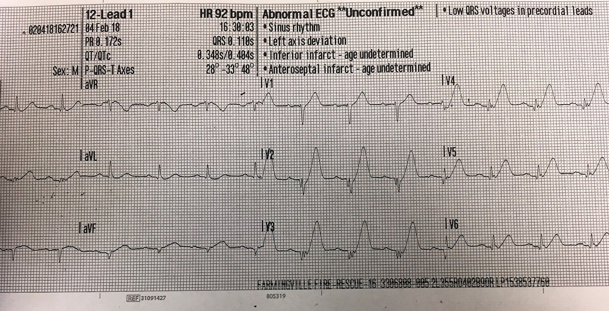
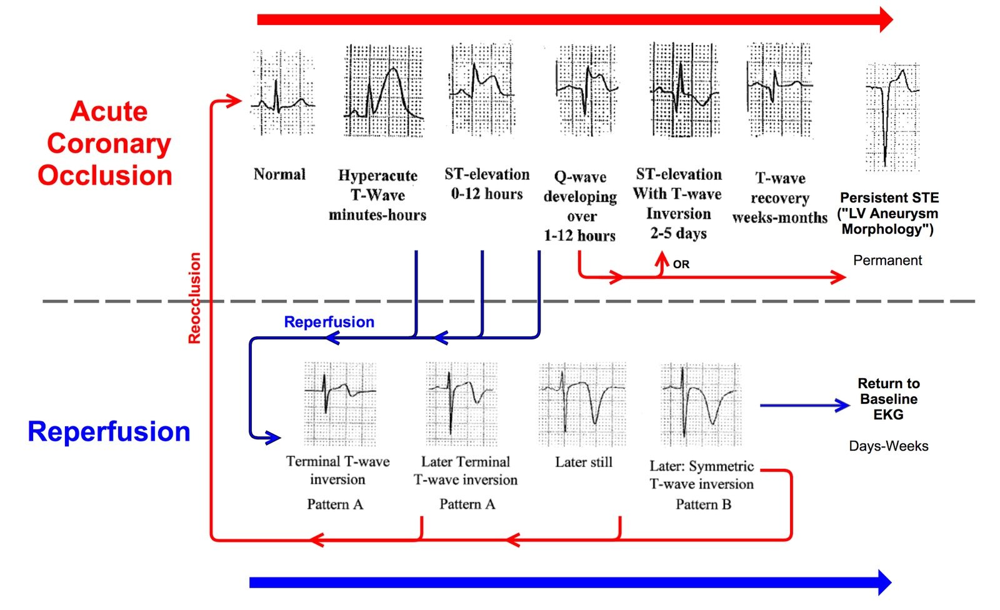
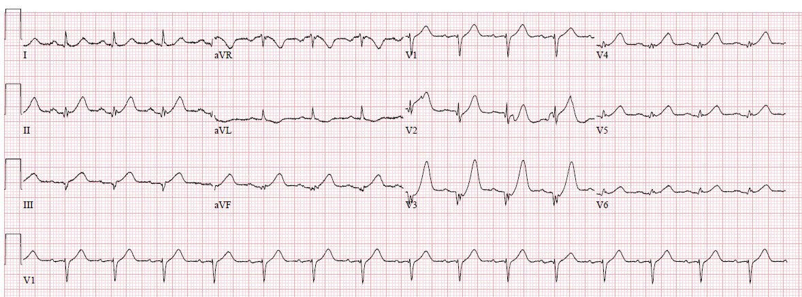
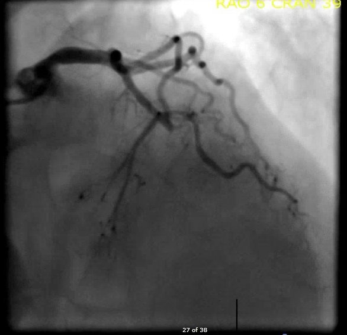
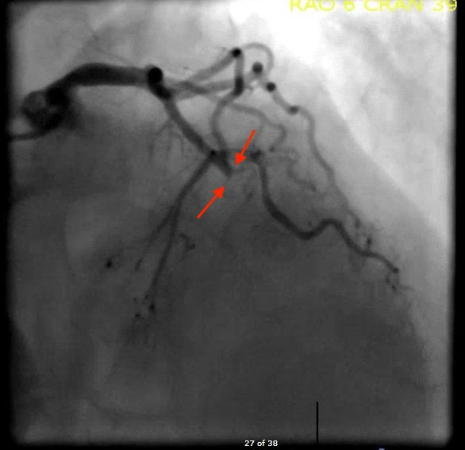
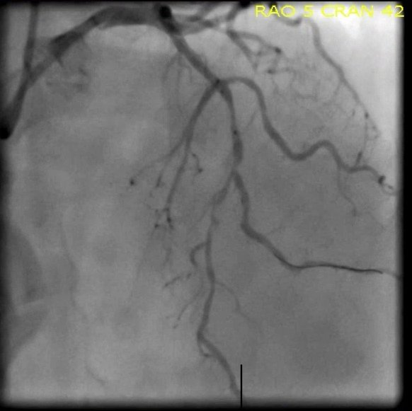
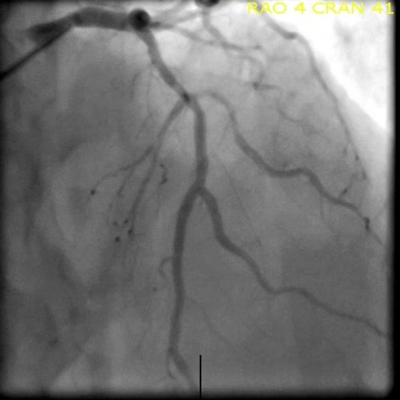
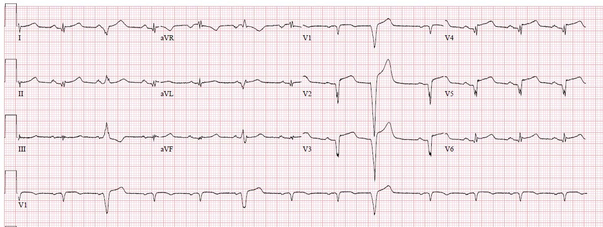
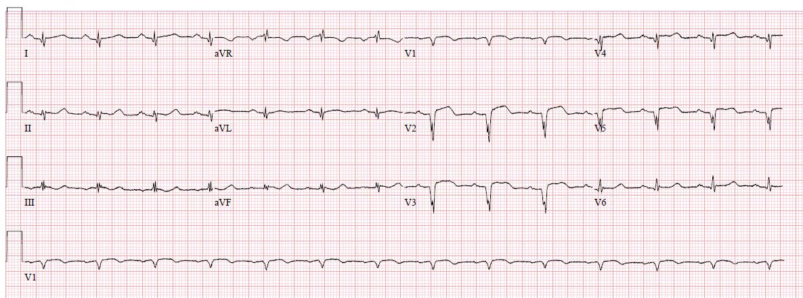

22/02/2018 — Đau vai sau khi nhấc một chiếc thùng nặng
Bản dịch tiếng Việt của bài "Shoulder pain after lifting a heavy box" – Dr. Smith’s ECG Blog. Giữ nguyên toàn bộ 10 hình ảnh của bản gốc.
Tác giả: Pendell Meyers, biên tập: Steve Smith
Ca này sẽ quá dễ với phần lớn độc giả lâu năm, nhưng nếu bạn đã ở trình độ đó, hãy ngồi lại và tận hưởng việc nhận ra mình chỉ cần bao nhiêu mili giây ít ỏi để nhận ra điều này nhờ rất nhiều ví dụ trước đây trên blog này!
Tôi được đội cấp cứu ngoài viện (EMS) gửi điện tâm đồ này, kèm thông tin duy nhất là của một nam giới trung niên đau vai trái.


Có sóng T tối cấp (hyperacute T-waves) ở các chuyển đạo V1-V6, cũng như ở các chuyển đạo II, III, aVF. Các điểm J đều nằm trên đường nền, ngoại trừ các chuyển đạo V2-V3 có ST chênh xuống (STD) nhẹ (tạo nên hình thái de Winter khi có sóng T tối cấp).
Làm sao giải thích được việc các dấu hiệu rõ nhất nằm ở các chuyển đạo trước, nhưng các chuyển đạo dưới cũng có sóng T tối cấp??
Mạch bị tắc phải là mạch cấp máu cho thành trước và cả mỏm tim và/hoặc thành dưới. Biến thể thường gặp nhất thỏa mãn điều này là LAD típ III “vòng qua mỏm” (wraparound). Đây là một LAD lớn và dài, vòng qua mỏm tim, cấp máu cho mỏm và đôi khi cả một phần thành dưới.
Dựa trên điện tâm đồ, ca tắc mạch vành cấp này được dự đoán có thời gian rất ngắn, mức độ cấp tính rất cao và cơ tim còn sống rất nhiều. Như trong sơ đồ tham chiếu của chúng tôi bên dưới, sóng T tối cấp nói chung chỉ tồn tại trong vòng vài giờ đầu của tắc mạch vành cấp kéo dài, hoặc ngay sau khi tái tưới máu (“trên đường đi lên, và trên đường đi xuống,” như Dr. Smith nói).


Chúng tôi đã kích hoạt phòng thông tim (cath lab) dựa trên điện tâm đồ của EMS này, vì nó rõ ràng có giá trị chẩn đoán tắc mạch vành cấp liên quan đến thành trước, thành bên và thành dưới. Khi tôi đưa ra quyết định này một cách tiến cứu dựa trên điện tâm đồ có giá trị chẩn đoán rất cao cụ thể này, tôi ước tính khả năng tắc mạch vành cấp là nguyên nhân của các dấu hiệu điện tâm đồ này vào khoảng 99%, 1% còn lại là trường hợp thỉnh thoảng gặp bệnh cơ tim Takotsubo với các dấu hiệu điện tâm đồ không thể phân biệt được, và chỉ có thể phân biệt bằng chụp mạch vành.
Bệnh nhân đến buồng hồi sức cùng lúc với bác sĩ tim mạch.
Ông là một người đàn ông trung niên, tiền sử chỉ có tăng huyết áp (HTN), đã gọi EMS vì “ê ẩm” vai trái khi đang làm việc trong ga-ra nhà mình. Ông kể đã nhấc một chiếc thùng nặng khoảng 75 lbs (pound), rồi đặt nó xuống lại, sau đó thấy đau dữ dội ở vai trái, mô tả là “ê ẩm” và “đè nặng.” Ông ngừng làm việc, nhưng cơn đau vẫn kéo dài. Ông đã chờ ở nhà 2-3 giờ trước khi gọi EMS vì nghĩ cơn đau có thể tự hết.
Đây là điện tâm đồ đầu tiên của ông tại khoa cấp cứu (ED):


Không hiểu sao bác sĩ tim mạch không thấy ấn tượng với các dấu hiệu này. Ông ấy cũng cho rằng cơn đau là do cơ xương khớp vì nó bắt đầu vào khoảng thời gian nhấc chiếc thùng nặng. Tuy nhiên khi khám, bệnh nhân cử động vai hết tầm mà cơn đau vai dữ dội, liên tục không hề thay đổi.
Tôi khuyên bác sĩ tim mạch rằng bệnh nhân này phải được đưa đi thông tim và can thiệp ngay lập tức. Ông ấy nói rằng điện tâm đồ này không đáp ứng tiêu chuẩn STEMI. Tôi nói rằng bệnh nhân bị tắc mạch vành cấp dựa trên sóng T tối cấp, cùng một bệnh lý như một STEMI rõ ràng. Điểm khác biệt duy nhất là còn nhiều cơ tim sống để cứu hơn cả một STEMI rõ ràng kinh điển, vì chưa có ST chênh lên (STE).
Lưu ý: Lý do còn nhiều cơ tim để cứu hơn so với STEMI kinh điển là vì các tế bào cơ tim bị thiếu máu cục bộ cấp trước tiên “ghi dấu” ở sóng T và làm tăng diện tích dưới sóng T, sau đó khi chúng bắt đầu đi vào quá trình chết, chúng ghi dấu ở đoạn ST, và cuối cùng khi chúng bị choáng hoặc đã chết, chúng không thể dẫn truyền điện thế hoạt động và ghi dấu ở sóng Q. Theo tôi biết thì điều này chưa được chứng minh ở mức tế bào nhưng được củng cố vững chắc bởi kinh nghiệm của tôi và hàng trăm ca trên blog này.
Ông ấy hỏi tôi nghĩ tổn thương nằm ở đâu dựa trên điện tâm đồ, và tôi nói “LAD đoạn giữa hoặc cao hơn, và LAD sẽ là típ III vòng qua mỏm.”
Tôi đứng cạnh máy theo dõi, ghi lại điện tâm đồ mỗi 5 phút trong 20 phút tiếp theo trong lúc cố thuyết phục bác sĩ tim mạch, chờ đợi các điện tâm đồ ghi lại sẽ cho thấy tiến triển thành ST chênh lên rõ ràng. Nhưng các điện tâm đồ không thay đổi – sóng T tối cấp hiện diện liên tục trong khoảng 45 phút (từ điện tâm đồ của EMS đến điện tâm đồ cuối cùng của tôi tại ED). Bệnh nhân cho biết cơn đau của ông vẫn y như vậy suốt 3-4 giờ, không có đợt nào giảm đau rồi đau trở lại.
Theo kinh nghiệm của tôi (và Dr. Smith đồng ý), hiếm khi sóng T tối cấp kéo dài lâu như vậy mà không tiến triển hay biến đổi. Phần lớn các ca chúng tôi có trên blog này cho thấy tiến triển thành ST chênh lên rõ ràng, hoặc bạn sẽ thấy diễn tiến có thể dự đoán được của tái tưới máu và tắc lại với sóng T tối cấp theo cả hai chiều. Có thể đã có tái tưới máu rồi tắc lại giữa điện tâm đồ của EMS và điện tâm đồ tại ED, dù điều này ít có khả năng hơn vì bệnh nhân phủ nhận có lúc triệu chứng cải thiện tạm thời. Điều thú vị là Dr. Smith lưu ý rằng chính de Winter đã phát biểu rằng hình thái đặc trưng của ông ổn định trong vài giờ, dù theo ý kiến của Dr. Smith thì dữ liệu của de Winter thực ra không ủng hộ khẳng định đó.
Có thể ông có một nguồn tuần hoàn bàng hệ rất nhỏ, vừa đủ để ngăn tiến triển, giữ ông ở đầu trên của phổ bệnh lý de Winter. Cũng có thể bệnh nhân có các đợt ngắn tái tưới máu và tắc lại tái diễn, không đủ thời gian để biểu hiện diễn tiến của các dấu hiệu điện tâm đồ trước khi đảo ngược.
Một bác sĩ nội trú đồng nghiệp của tôi đã siêu âm tại giường, cho thấy rối loạn vận động thành trước và mỏm rất rõ, càng khẳng định chẩn đoán.
May thay, đến lúc này bác sĩ tim mạch đã đưa bệnh nhân vào phòng thông tim.
Đây là những gì họ tìm thấy!








Đây là điện tâm đồ sau thông tim của ông, khoảng 2 giờ sau điện tâm đồ tại ED ở trên (không có điện tâm đồ nào giữa các điện tâm đồ tại ED của tôi và điện tâm đồ này):


Điện tâm đồ này cho thấy nhồi máu cơ tim cấp đã tiến triển đến mất gần như hoàn toàn thành trước theo kiểu xuyên thành. Có sóng Q bệnh lý sâu, rộng mới xuất hiện ở V1-V5, với ST chênh lên kéo dài và sóng T đã giảm phần nào tính chất tối cấp. Sóng T tối cấp ở các chuyển đạo dưới giờ đây kém tối cấp hơn nhiều so với điện tâm đồ trước.
Nhưng chúng ta xong rồi, đúng không? Chụp mạch vành khẳng định tái tưới máu thành công rồi, đúng không?
SAI.
Điện tâm đồ khẳng định hay phủ định tái tưới máu tốt hơn nhiều so với chụp mạch vành. Lý do là dòng chảy trong mạch lớn thượng tâm mạc không nhất thiết đảm bảo rằng chính các tế bào cơ tim ở phía hạ lưu đang nhận được máu. Mạch thượng tâm mạc hiển nhiên chia thành vô số nhánh nhỏ hơn để tạo tuần hoàn mao mạch đến các tế bào. Điện tâm đồ đo khả năng sống của tế bào chứ không phải dòng chảy qua các động mạch vành thượng tâm mạc. Đọc điện tâm đồ ở trình độ chuyên gia tốt hơn chụp mạch vành, tốt hơn troponin, thậm chí tốt hơn cả triệu chứng do bệnh nhân kể trong việc xác định tình trạng tắc và tái tưới máu!
Hiện tượng “không tái lưu” (no reflow) được mô tả khi bệnh nhân dường như tái tưới máu thành công trên chụp mạch vành nhưng nhồi máu cơ tim vẫn tiếp tục tiến triển. Điều này thường được chứng minh bằng các thay đổi điện tâm đồ tiến triển theo diễn tiến tắc mạch bên dưới, và trông giống với diễn tiến thấy ở những bệnh nhân hoàn toàn không được can thiệp. Người ta cho rằng nguyên nhân là do huyết khối và khối kết tập tiểu cầu trôi xuống vi tuần hoàn phía hạ lưu, hoặc một cơ chế bệnh sinh khác chưa rõ.
Vậy, biết rằng bệnh nhân này có thời gian từ cửa đến bóng (door-to-balloon) tương đối tốt, kết quả chụp mạch tốt, và có sóng T tối cấp ngay trước khi thông tim cấp cứu, bạn dự đoán troponin đỉnh của ông trong 24 giờ tiếp theo sẽ như thế nào?
Trả lời: Rất rất cao, vì bất chấp kết quả chụp mạch, điện tâm đồ cho thấy nhồi máu hoàn toàn.
Quả thật, troponin T đỉnh của ông là 8.89 ng/mL (tăng rất cao). Siêu âm tim cho thấy EF 35% với rối loạn vận động thành trước và mỏm rất rõ.
Đây là điện tâm đồ ngày hôm sau:


Đáng tiếc, các điện tâm đồ này là một ví dụ tuyệt vời về sự tiến triển thành “hình thái phình thất trái” (xem tham khảo bên dưới). Điện tâm đồ nhiều khả năng sẽ giữ gần giống như trên vô thời hạn. Điều cực kỳ quan trọng là phải nhận ra hình thái này, vì bệnh nhân này có nguy cơ cao nhất có thể đối với các biến chứng kinh điển của nhồi máu xuyên thành, bao gồm phình thất trái về mặt giải phẫu, huyết khối thành tim kèm đột quỵ sau đó, vỡ thành tự do, thông liên thất (VSD), hội chứng Dressler, v.v. Ông cũng có nguy cơ gặp một biến chứng khác ít được bàn đến hơn: chẩn đoán nhầm điện tâm đồ nền mới của ông! Ông nhiều khả năng sẽ có ST chênh lên kéo dài, điều sẽ gây báo động cho những người chăm sóc ông sau này, trong khi sóng T nhiều khả năng sẽ là đặc điểm điện tâm đồ đáng tin cậy nhất để cho chúng ta biết ông có đang bị thêm một đợt tắc mạch vành cấp ảnh hưởng đến thành trước hay không. Ông có nguy cơ bị xử trí sai theo cả hai chiều. Ví dụ, nếu chẳng may ông bị thuyên tắc phổi hay viêm màng ngoài tim hay chỉ đơn giản là trào ngược dạ dày-thực quản (GERD) hoặc đau thành ngực, ông có thể đến viện với đau ngực và điện tâm đồ này, dẫn đến kết luận chẩn đoán vội vàng và thông tim ngay thay vì thăm dò thêm các nguyên nhân khác. Nếu ông bị thêm một đợt tắc mạch vành cấp, chẩn đoán có thể bị bỏ sót hoặc chậm trễ vì đoạn ST của ông không được nhận ra là khác với điện tâm đồ nền, vốn giờ đây sẽ có ST chênh lên mãi mãi.
Bệnh nhân đã hồi phục và tiến triển tốt. Kết cục lâu dài không rõ.
Những điểm cần học:
1) Bạn PHẢI nhận ra được những sóng T tối cấp như thế này. Chúng thường gặp ở giai đoạn sớm của tắc mạch vành cấp.
2) Bạn phải học hỏi và bênh vực cho bệnh nhân của mình, vì những dấu hiệu điện tâm đồ này không được giảng dạy hay biết đến rộng rãi, do chiến lược hiện hành được các hướng dẫn thúc đẩy chỉ tập trung vào tiêu chuẩn STEMI sai lầm.
3) Sóng T tối cấp và/hoặc hình thái de Winter có thể hiện diện hàng giờ mà không biến đổi rõ ràng, nhưng trong phần lớn các ca bạn có thể tìm thấy bằng chứng tiến triển trên các điện tâm đồ liên tiếp. Chúng thậm chí có thể đại diện cho tắc hoàn toàn với hoại tử đang tiếp diễn (nhồi máu)!
4) LAD típ III vòng qua mỏm là một biến thể giải phẫu thường gặp, tạo ra các dấu hiệu thành trước và thành dưới trên điện tâm đồ.
5) Điện tâm đồ là thước đo chính xác nhất về tình trạng tắc và tái tưới máu, thậm chí tốt hơn chụp mạch vành, các giá trị xét nghiệm, hay triệu chứng của bệnh nhân.
6) Bạn phải làm quen với các dấu hiệu điện tâm đồ của nhồi máu hoàn toàn toàn bộ bề dày thành tim, cũng như các hội chứng lâm sàng và biến chứng xảy ra sau đó.